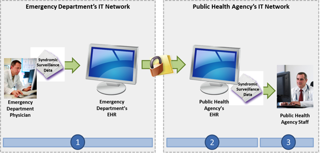

NwHIN 1.0 Portfolio > Scenarios > Sending Electronic Syndromic Surveillance Data to a Public Health Agency
Sending Electronic Syndromic Surveillance Data to a Public Health Agency
An emergency department provider sends electronic syndromic surveillance data to a public health agency:

A patient is seen at his local emergency department and is diagnosed with the influenza virus (flu) by a provider. In order to monitor the volume of patients in certain areas who have been diagnosed with the flu as well as to track the projected path of the spread of the virus, the emergency department provider enters the patient’s symptoms into the EHR and a message is automatically sent to local, state, and national public health agencies for monitoring.
 |
Meaningful Use Stage 2 Objectives related to syndromic surveillance: Capability to submit electronic syndromic surveillance data to public health agencies except where prohibited, and in accordance with applicable law and practice. (Meaningful Use Menu Set 1 for EPs) |
Common workflow steps for this scenario:
| After diagnosing a patient with the flu, the emergency department physician enters the patient’s symptoms and final diagnosis into an EHR. Upon recognizing the flu diagnosis, the EHR automatically sends a message detailing the patient’s symptoms to a state health agency. | ||
 |
The state health agency to which the emergency department sends the message employs the use of Public Health Information Network (PHIN) Messaging. In order to ensure interoperability with the state agency, the emergency department’s EHR sends the message in accordance with the HL7 2.5.1 Content Structure Specification and the Public Health Information Network (PHIN) Messaging Guide for Syndromic Surveillance: Emergency Department and Urgent Care Data Version 1.0. | |
| Upon receipt of the syndromic surveillance message, the state health agency’s staff may now use this data to track epidemic statistics. |
NwHIN 1.0 specifications and resources recommended for scenario:
Content StructureGuidance that specifies how to structure health information to ensure proper exchange |